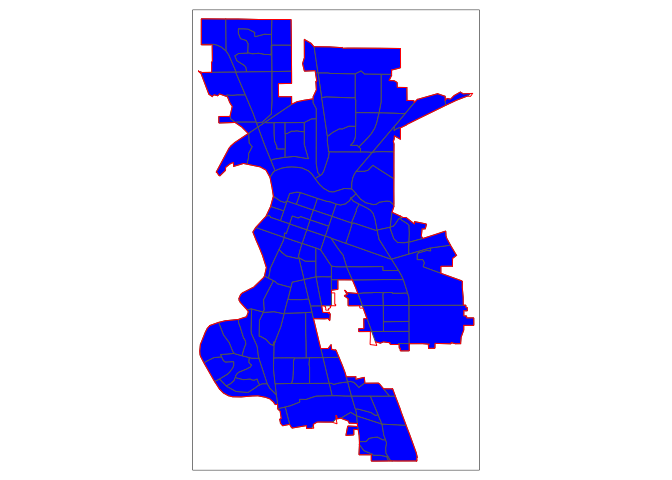
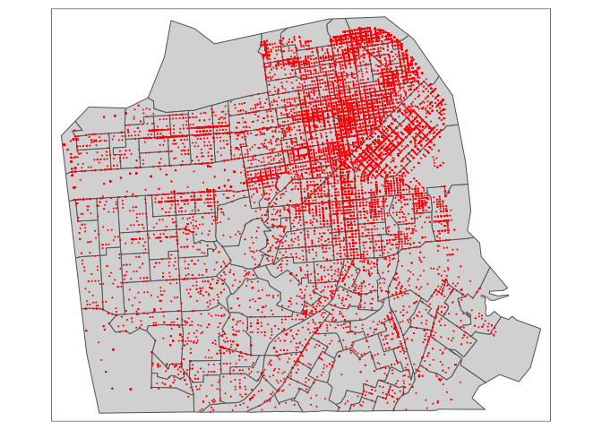
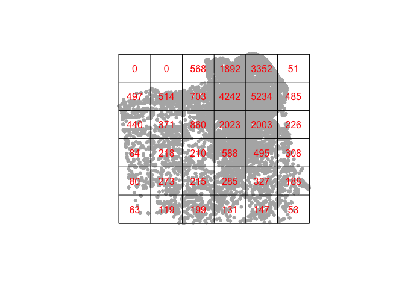
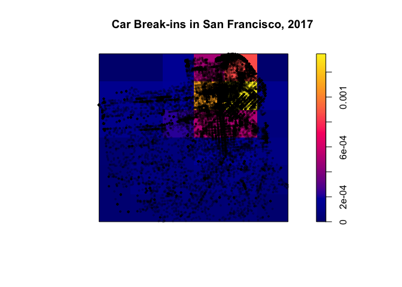
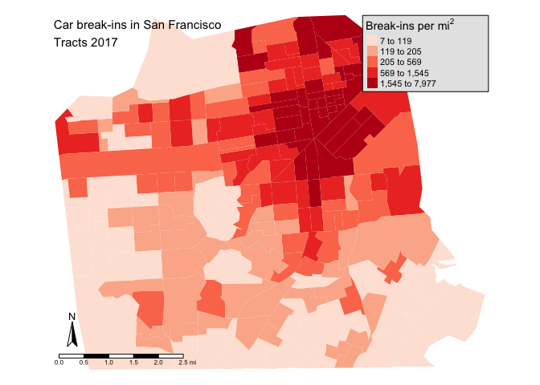
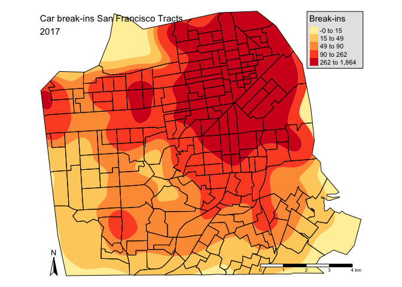
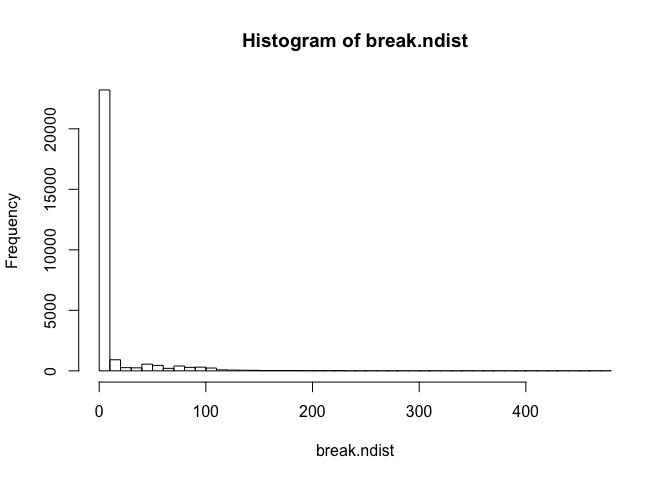

Lab 6: Point Pattern Analysis
CRD 150 - Quantitative Methods in Community Research
Professor Noli Brazil
November 2, 2018
In this guide you will learn how to handle and descriptively analyze spatial point data in R. You’ll also get some experience working with government open data. The objectives of the guide are as follows
- Learn how to create point data from x (longitude) and y (latitude) coordinate data
- Learn how to map point data
- Learn basic spatial point data operations
- Learn how to examine point patterns
The guide will use data from the San Francisco Open Data Portal. Specifically, we will examine the spatial distribution of car break ins, which has gotten a lot of recent public attention.
Assignment 6 is due by 12:00 am, November 9th on Canvas. See here for assignment guidelines. You must submit an .Rmd file and its associated .html file. Name the files: yourLastName_firstInitial_asgn06. For example: brazil_n_asgn06.
Bringing in tract data
Let’s first bring in Census tract data into R. We will bring in census tract polygon features and racial composition data using the Census API and keep tracts within San Francisco city boundaries. The code for doing this is below. We won’t go through each line of code in detail because we’ve covered all of these operations and functions in prior labs. We’ve embedded comments within the code briefly explaining what each chunk is doing, but go back to prior guides (or RDS/GWR) if you need further help.
#Load necessary packages
library(sf)
library(sp)
library(tidyverse)
library(tidycensus)
library(tigris)
options(tigris_class = "sf")
library(tmap)
library(rmapshaper)census_api_key("YOUR API KEY GOES HERE")# Bring in census tract data.
ca.tracts <- get_acs(geography = "tract",
year = 2016,
variables = c(tpop = "B01003_001", tpopr = "B03002_001",
nhwhite = "B03002_003", nhblk = "B03002_004",
nhasn = "B03002_006", hisp = "B03002_012"),
state = "CA",
survey = "acs5",
geometry = TRUE)
# Make the data tidy, calculate percent race/ethnicity, and keep essential vars.
ca.tracts <- ca.tracts %>%
select(-(moe)) %>%
spread(key = variable, value = estimate) %>%
mutate(pnhwhite = nhwhite/tpopr, pnhasn = nhasn/tpopr,
pnhblk = nhblk/tpopr, phisp = hisp/tpopr) %>%
select(c(GEOID,tpop, pnhwhite, pnhasn, pnhblk, phisp))
# Bring in city boundary data
pl <- places(state = "CA", cb = TRUE)
# Keep SF city
sf.city <- filter(pl, NAME == "San Francisco")
# Keep tracts that intersect SF city boundary.
# Eliminate Farallon and Treasure Islands
sf.tracts <- ms_clip(ca.tracts, sf.city, remove_slivers = TRUE) %>%
filter(GEOID != "06075980401" & GEOID != "06075017902")You should get a map that looks like
tm_shape(sf.tracts) +
tm_polygons()
Bringing in point data
Let’s now bring in the locations of car break-ins in San Francisco in 2017. I’ve uploaded the file Car_Break-ins.csv into GitHub for your convenience. Use read_csv() to read it in.
break.df <- read_csv("https://raw.githubusercontent.com/crd150/data/master/Car_Break-ins.csv")To convert these data into spatial points, we’ll need to “put” them onto a map. Luckily, our data have longitude (x-coordinate) and latitude (y-coordinate) information, so we don’t need to geocode addresses.
We will use the function st_as_sf() to create spatial points from longitude/latitude coordinates. In the function, you will need to specify the x,y (or longitude/latitude) coordinates. In break.sf, these variables are conveniently named X and Y and is specified in st_as_sf() using the coords argument as such coords = c("X", "Y"). Next, you’ll need to specify the Coordinate Reference System (CRS) using the option crs=. We went through in lecture and in this guide some of the intricacies of a CRS. You can also read more about CRS in Ch. 2.3 and 6 of GWR. You won’t be tested on CRS and projections, and all of our labs and assignments will require fairly minimal effort in dealing with CRS, but it is an essential topic when handling spatial data, so please go through the guide and lecture slides if you didn’t get it the first time.
There are two important things to know about CRS. First, all spatial data in your current R session should have the same CRS. We already brought in sf.tracts into R, which has a CRS of
st_crs(sf.tracts)## Coordinate Reference System:
## EPSG: 4269
## proj4string: "+proj=longlat +datum=NAD83 +no_defs"+proj=longlat means that sf.tracts has a longitude/latitude projected coordinate system. Insert this CRS into the crs= argument in the st_as_sf() function as follows
break.sf <- st_as_sf(break.df, coords = c("X", "Y"), crs = st_crs(sf.tracts))The second important thing is your CRS should be compatible with the functions you plan to use on your data. Distance in longitude/latitude is in decimal degrees which (1) most people don’t understand and (2) is not compatible with several spatial functions. We need to change this to something that takes on meters. A popular meter-based Projected Coordinate System is Universal Tranverse Mercator (UTM). UTM separates the United States in separate zones and Northern California is in zone 10.

Figure 1: UTM Zones
Let’s reproject both sf.tracts and breaks.sf to a UTM Zone 10 projected coordinate system. Use NAD83 as the datum and set the ellipse as GRS80 (popular choices for the datum/ellipse of the U.S.). To reproject use the function st_transform() as follows
sf.tracts.utm <- st_transform(sf.tracts, crs = "+proj=utm +zone=10 +datum=NAD83 +ellps=GRS80")
break.sf.utm <- st_transform(break.sf, crs = "+proj=utm +zone=10 +datum=NAD83 +ellps=GRS80")Let’s map the break ins.
tm_shape(sf.tracts.utm) +
tm_polygons() +
tm_shape(break.sf.utm) +
tm_dots(col="red")You’ll notice those break-ins on Treasure Island (top right corner). Take those out by keeping just the points that intersect with the tract polygons. Use the function st_intersects(), which we covered in Lab 4.
subset.int<-st_intersects(break.sf.utm, sf.tracts.utm)
subset.int.log = lengths(subset.int) > 0
break.sf.utm <- filter(break.sf.utm, subset.int.log)
tm_shape(sf.tracts.utm) +
tm_polygons() +
tm_shape(break.sf.utm) +
tm_dots(col="red")
spatstat package
As we saw in Week 5, sf spatial objects are often not compatible with most spatial functions. This is the case here with spatial point pattern analysis methods. We will be using the package spatstat, which has a number of useful functions for point pattern analysis. The downside is that it introduces yet another object class: ppp objects. Fortunately, the package is well documented and is not too difficult to get used to. Install the package and load it in.
install.packages("spatstat")
library(spatstat)There is no function that directly converts sf to ppp. We’ll need to convert break.sf.utm first to an sp object using the as() function as was described in Lab 5.
break.sf.sp <- as(break.sf.utm, "Spatial")Then convert this sp point object to a ppp object
break.sf.ppp <- as(break.sf.sp, "ppp")As we have done with sp, we’ll limit the nuts and bolts of how ppp objects work, and we’ll stick to sf point objects whenever we can.
Point intensity
One of the first analyses we can do with point data is to examine the distribution of points across an area. This is measuring first-order effects. First-order patterns look at trends over space and are typically measured by point density.
Quadrat counts
A popular first-order method is to calculate quadrat counts, as is discussed on page 127 in OSU. Here, we break up the area into equally sized cells. We can carry out a simple quadrat analysis on our data using the quadratcount() function in the spatstat package. You have to specify the number of cells in your area. Here, we make a 6 x 6 grid, count the number of points within each of the 36 cells, and plot the grid.
qcounts<-quadratcount(break.sf.ppp, nx = 6, ny = 6)
plot(unmark(break.sf.ppp), pch=20, cols="grey70", main=NULL)
plot(qcounts, col = "red", add=TRUE)
We can calculate the density (intensity) of points in each cell using the intensity() command.
break.intensity <- intensity(qcounts)
plot( intensity(qcounts, image=TRUE), main="Car Break-ins in San Francisco, 2017")
plot(unmark(break.sf.ppp), pch=20, cex=0.6, col=rgb(0,0,0,.2), add=TRUE)
Six-by-six might be too small. Let’s instead make a 40 by 40 grid.
qcounts<-quadratcount(break.sf.ppp, nx = 40, ny = 40)We’ll need to convert the resulting object into a data frame to do further analysis.
Qcount<-data.frame(qcounts)Following page 130 in OSU, we can get a basic measure of the spatial arrangement of points by calculating the ratio of the variance to the mean (VMR) of the quadrat counts
#dont plot qcounts - 40 x 40 grid wont show you much
var(Qcount$Freq)/mean(Qcount$Freq)## [1] 171.6365OSU states a VMR greater than 1.0 indicates a tendency towards clustering. 171.6 is super huge!
Points in polygons
Rather than use quadrats, we can instead use census tracts, which has been our definition of neighborhood. To get the count of break-ins by census tract, we need to use the function aggregate(), which is a part of the sf package. The code below tells R to sum up the number of points break.sf in sf.tracts identifying each point by its “IncidntNum”. The argument length is the R function for summing up points. If you wanted to get the average time of day of break-ins by census tract, you would use “Time” rather than “IncidntNum” and mean rather than length.
sf.tracts.sum <- aggregate(break.sf.utm["IncidntNum"], sf.tracts.utm, length) %>%
replace(is.na(.), 0)
View(sf.tracts.sum)The column IncidntNum indicates the number of car break-ins in each tract. If you get an NA value, that means no thefts are found in that tract. That’s why we included the command replace(is.na(.), 0), which tells R to replace any NA values with a 0. Notice that sf.tracts.sum does not have the other variables from sf.tracts.utm. We’ll have to join sf.tracts.sum to sf.tracts.utm. Because we’re joining two sf objects, we’ll use the function st_join(). Let’s also rename IncidntNum to something more descriptive
sf.tracts.utm <- sf.tracts.utm %>%
st_join(sf.tracts.sum, join=st_equals, left=FALSE) %>%
rename(breakins = IncidntNum)We can map the count of break-ins by census tract, but counts do not take into consideration exposure. In this case, tracts that are larger in size or greater in population will likely have more break-ins. Let’s calculate the number of break-ins per area and per 100 population.
To calculate the number of break-ins per area, we’ll need to get the area of each polygon, which we do by using the function st_area(). The default area metric is kilometers squared, but we can use the function set_units() from the units package to set the unit of measure to (the U.S. friendly) miles squared. Use these functions within mutate() to create a new column containing each tract’s area.
library(units)
sf.tracts.utm<-mutate(sf.tracts.utm,area=set_units(st_area(sf.tracts.utm), value = mi2))Then calculate the number of break-ins per area and per 100 population.
sf.tracts.utm<-mutate(sf.tracts.utm,barea=breakins/area, bpop = (breakins/tpop)*100)Let’s create a choropleth map of break-ins per area.
tm_shape(sf.tracts.utm, unit = "mi") +
tm_polygons(col = "barea", style = "quantile",palette = "Reds",
border.alpha = 0, title = expression("Break-ins per " * mi^2)) +
tm_compass(position = c("left", "bottom")) +
tm_scale_bar(position = c("left", "bottom")) +
tm_style("natural", title = "Car break-ins in San Francisco\nTracts 2017", title.size = 0.95, frame=FALSE)
Try mapping break-ins per 100 population. Do you see any significant differences between the two maps? If so, which measure do you think is a more appropriate representation?
Point intensity heat maps
In Chapter 3 of OSU, the authors describe the use of kernel density (heat) maps to show the spatial patterns of points. Let’s create one of those here. One benefit of using a kernel density map to visually present your point data is that it does away with predefined areas like quadrats or census tracts. Your point space truly becomes continuous.
We use the function smooth_map() to create a kernel density map. This function is in the package tmaptools, which we’ll need to load in.
library(tmaptools)The most important parameter we need to set in smooth_map() is the bandwidth, which represents the radius of the kernel function. Think of the bandwidth as a smoothing parameter, where the larger it is, the smoother the map. We set this to 0.5, which represents 0.5 miles (because we’ll set unit = "mi" as an option within the function). We’ll also need to specify the argument cover which specifies the boundaries of the map (SF boundaries). I use quantile to define the color style, but as we outlined in Week 4’s lab, there are other methods. Run smooth_map() and save the result into an object.
ds <- smooth_map(break.sf.utm, bandwidth = 0.5, cover = sf.tracts.utm, unit = "mi", style = "quantile")The values in ds that you’ll need to map is ds$polygons. Let’s map that on top of sf.tracts.utm and make the map look “pretty”.
tm_shape(ds$polygons) + tm_fill(col = "level",
palette = "YlOrRd", border.alpha = 0, title = expression("Break-ins")) +
tm_shape(sf.tracts.utm) + tm_borders() +
tm_compass(position = c("left", "bottom")) +
tm_scale_bar(position = c("right", "bottom")) +
tm_style("natural", title = "Car break-ins San Francisco Tracts\n2017", title.size = 0.95, frame=FALSE, legend.position = c("right", "top"))
Cool, right? As we discussed in lecture, setting the bandwidth can really change your results. My suggestion is to test different bandwidth values. Or choose a bandwidth that makes sense given the city (e.g. big vs. small) and/or context (e.g. walking vs. driving) you are studying.
Assessing point clustering using distance based methods
In Week 5, we covered Moran’s I, which provides a neat summary index for measuring spatial autocorrelation (clustering). There is no point analog to the Moran’s I, but, as detailed in OSU Ch. 5, there are a handful of distance (nearest neighbor) based methods for determining whether spatial points are clustered across a geographic space. Methods that measure the relationship between points, in this case their distance from one another, are capturing second-order effects.
Nearest neighbor distance
The first distance-based method that OSU goes through is calculating the average nearest neighbor distance. Here, you calculate for each point the distance to its nearest neighbor. You do this using the function nndist(), which is a part of the spatstat package.
We plug break.sf.ppp into nndist(), save that result into an object (nndist() produces a numeric vector containing nearest distance for each point), and take the mean.
break.ndist <- nndist(break.sf.ppp)
mean(break.ndist)## [1] 9.242018We find that the mean nearest distance is 9.24 meters. That’s pretty darn small. If you plot a histogram of the nearest distance values
#hist() is the base version for producing a histogram. ggplot() does not work
#on vectors
hist(break.ndist, breaks = 50)
we find a lot of zeroes, which means there are a lot of car break-ins happening in the same location.
How do we know this value indicates clustering? The mean and histogram indicate that points cluster, but we can formally test it using the Clark and Evan’s R statistic described on OSU page 143. The spatstat package has the function clarkevans.test() for calculating this statistic and testing whether it is statistically significant from 1 (which indicates no clustering). An R less than 1 that is statistically significant indicates clustering.
clarkevans.test(break.sf.ppp)##
## Clark-Evans test
## No edge correction
## Z-test
##
## data: break.sf.ppp
## R = 0.25886, p-value < 2.2e-16
## alternative hypothesis: two-sidedK function
OSU introduces a set of functions - G(), F(), and K() - that describe the distribution of nearest neighbor distances. Our good friend spatstat provides canned functions for estimating these distributions. Let’s calculate K().
Two things. First, OSU describes ways to assess spatial clustering inferentially by comparing the observed distribution of nearest neighbor distances to a theoretically derived expectation with “envelopes”. We can do this in R using the envelope() function. Second, OSU on page 137 warns us about edge effects. R offers 5 edge effect corrections. We’ll use the guard zone correction, which we specify using correction = "border" in the envelope() function. Let’s calculate K and its envelope.
envK <- envelope(break.sf.ppp, fun = Kest, correction="border", nsim = 50)Then plot it
plot(envK)
It’s hard to see, but R is plotting the envelopes. They are just really narrow. To calculate G() and F(), use envelope() in the same way, replacing Kest with Gest and Fest in the fun option.
All the evidence provided thus far - quadrats, kernel density maps, nearest neighbor distance, the K function - indicate that break-ins cluster.
Assignment 6
Download and open the Assignment 6 R Markdown Script. Any response requiring a data analysis task must be supported by code you generate to produce your result. (Just examining your various objects in the “Environment” section of R Studio is insufficient—you must use scripted commands.).
In this assignment, you will be exploring the spatial distribution of Airbnb listings in the City of Oakland. Airbnb involves renting an entire home, a room or a shared room, typically from a private citizen. The data were downloaded from Airbnb’s public use data site. A record layout of the data oak_tracts.shp can be found here. The oakland_airbnb_listings.csv file contains a lot of variables, but the key one for this assignment is id (unique ID for each listing). Download oak_tracts.shp (in a zip file) from the Assignments >- Assignment 6 folder on Canvas. oakland_airbnb_listings.csv can be found here. We also uploaded the file on Canvas.
- The following figures show plots of the G function for different sets of points. Indicate the point pattern - Complete Spatial Randomness, Uniform/Evenly spaced, or Clustered - in each plot. (1 point each)

- For the plot shown in (b), explain what is causing the G function’s staircase shape. (1 point)
- For this question, you will conduct a point pattern analysis of Airbnb listings in Oakland.
- Bring in the Oakland census tract shapefile first. Then bring in the Airbnb locations and convert them to a spatial point sf object. Reproject both the tract and Airbnb locations to NAD 83/GRS80/UTM Zone 10. Keep Airbnb locations within Oakland boundaries. (1 point)
- Use a first-order approach to show the spatial distribution of Airbnb locations in the city. What do your results suggest about the pattern of Airbnb locations? (2 points)
- Plot the K function with its envelopes using a border correction. What is R plotting on the x and y axis? (2 points)
- Plot the F and G functions with their envelopes using a border correction. (2 point)
- What do the K, F and G plots suggest about the pattern of Airbnb locations? (1 point)
- Airbnb has received criticism regarding its effects on local communities. See this CityLab article outlining the major criticisms. Let’s explore the validity of these criticisms using our data set.
- Community advocates claim that Airbnb increases rent. What is the correlation between tract-level rent and the number of Airbnb listings per 1,000 housing units? (1 point)
- This article contends that Airbnb promotes housing vacancy. Calculate the correlation between percent vacant housing and the number of Airbnb listings per 1,000 housing units. (1 point)
- Another claim is that Airbnb locations are in predominantly white, higher income, and gentrifying neighborhoods. What is the correlation between the number of Airbnb listings per 1,000 housing units and percent black, Hispanic, and median household income? (2 points)
Website created and maintained by Noli Brazil